Плейнспоттеру полезно отличать модели самолётов по нескольким причинам:
В целом, это делает увлечение более информативным и интересным.
| Модель | Airbus 380 | Boeing 747 | Airbus 340 |
| Фотография | |
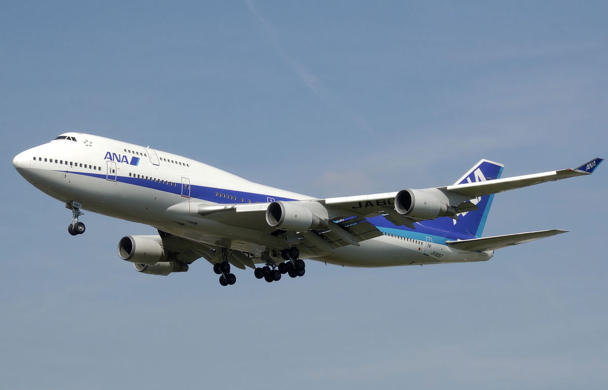 | 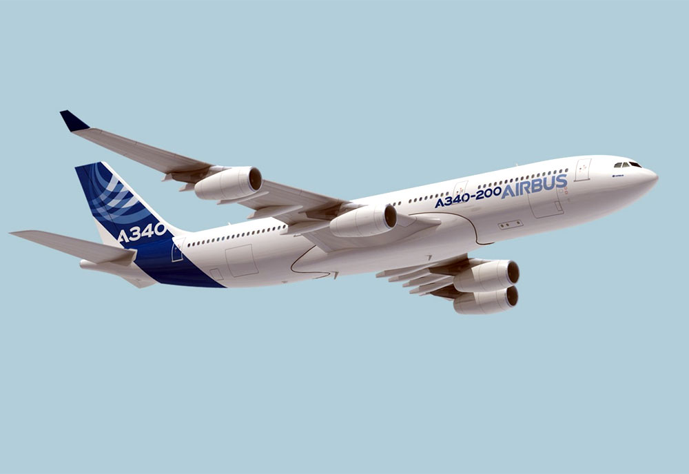 |
| Отличительная черта | A380 является единственным в мире двухпалубным самолётом, верхняя палуба которого простирается на всю длину фюзеляжа | B747, как и A380 — двухпалубный самолёт, но его главное отличие в том, что верхняя палуба короче основой длины фюзеляжа, что образует некий "горб" | A340 — единственный самолёт с четырьмя двигателями, являющийся однопалубным |
Чтобы отличить Аэробус от Боинга достаочно взглянуть на окна кабины пилота: у Аэробуса они образуют прямую линию, у Боинга — выгнутую в форме двух "галочек".
| Boeing | Airbus |
| 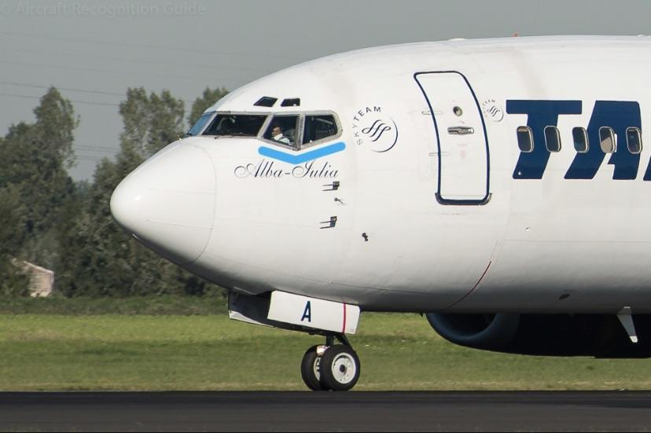 | 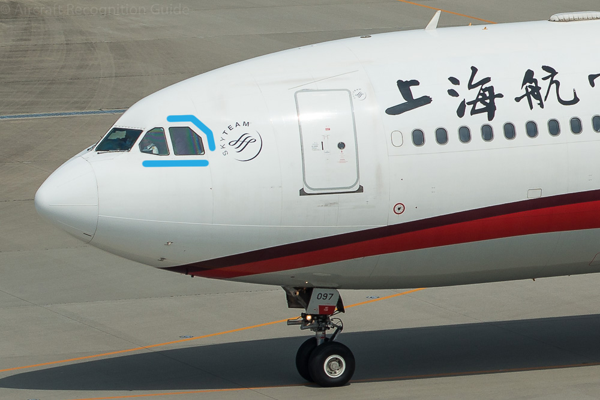 |
Главное отличие этих моделей в основной стойке шасси. У 767 она состоит из 2-ух колёс, а у 777 — из 3-ёх.
| B767 | B777 |
| 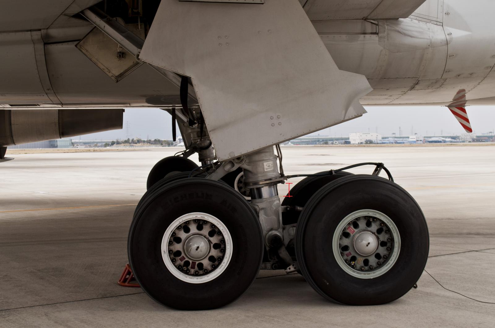 | 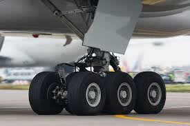 |
Главная особенность B787 заключается в окнах кабины пилота: они состоят из четырёх панелей, а не из шести, как у большей части самолётов
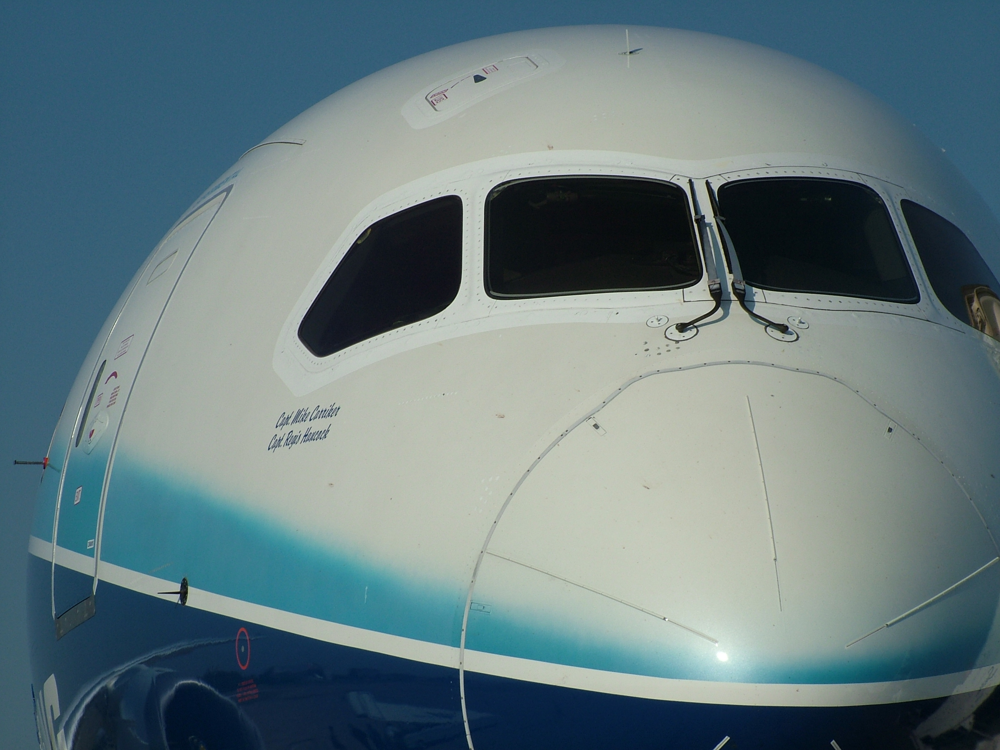Эту модель определить довольно просто, достаточно взглянуть на выгнутый центр нижней части фюзеляжа и винглеты, которые всегда есть у этого самолёта
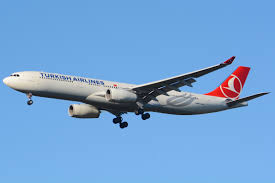Определить, что перед Вами А350 довольно просто благодаря его двум отличительным чертам: изогнутым винглетам и лобовому стеклу, состоящему из 6 панелей
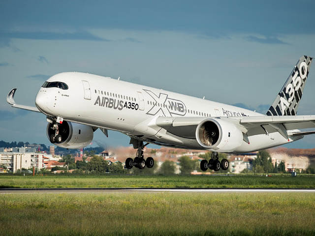Главное отличие узкофюзеляжных Аэробусов от Боингов — более скруглённый нос
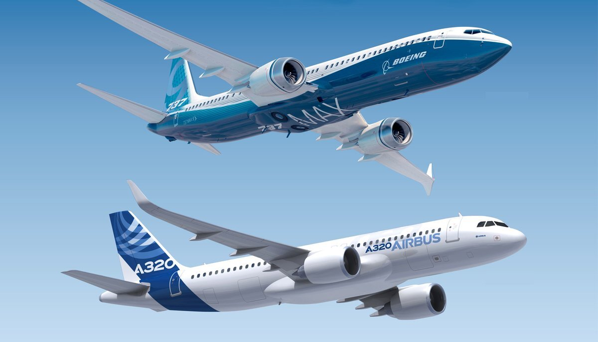Но как же отличать самолёты семейства A320 друг от друга?
| Модель | Фотография | Отличительные черты | Пассажировместимость |
| A318 | 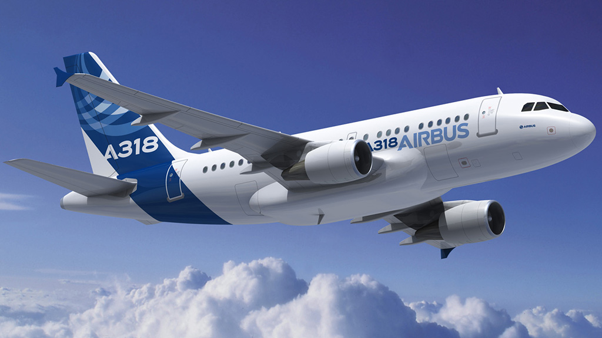 | Самый маленький и короткий самолёт семейства с одним запасным выходом над крылом | 132 |
| A319 | 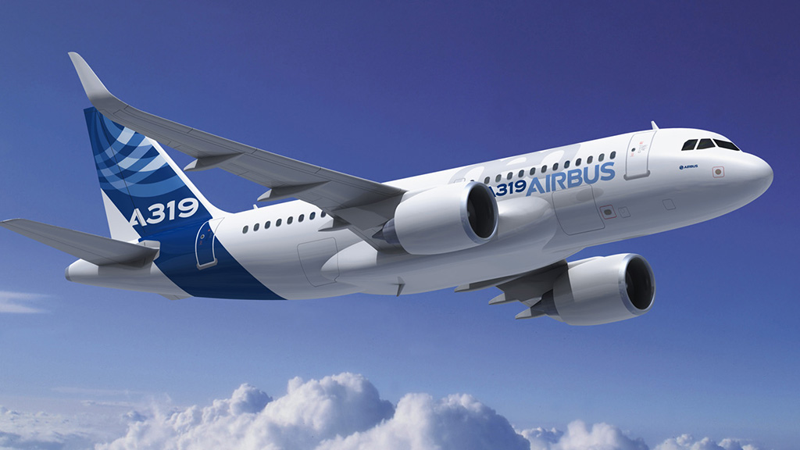 | Немного длиннее 318, тоже имеет один запасной выход над крылом | 160 |
| A320 |  |
Два запасных выхода над крылом | 194 |
| A321 | 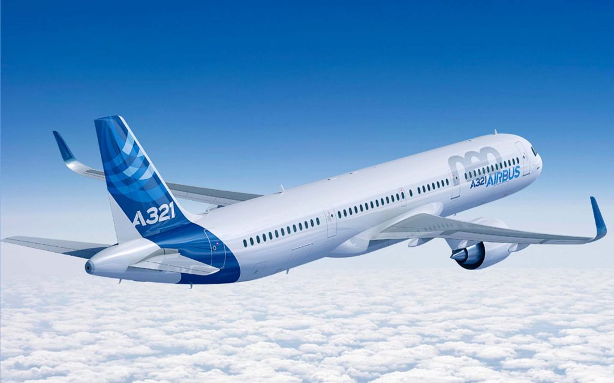 | 4 запасных выхода, равномерно расположенные по длине фюзеляжа | 244 |
Как было написано выше, самый простой способ отличить это судно — по носовой части. Но есть ещё один секрет: треугольная часть от фюзеляжа до руля, которой нет у Аэробусов
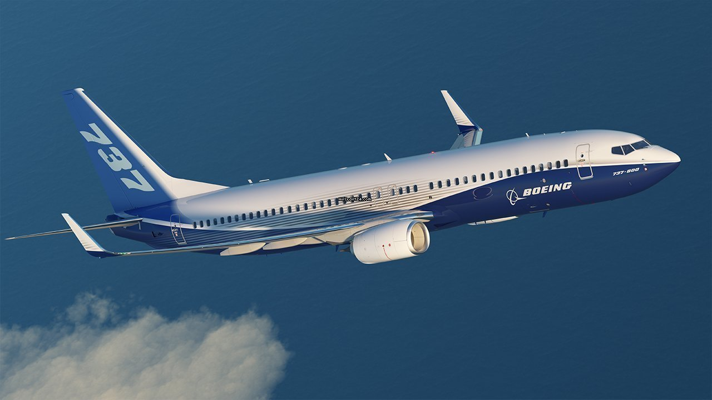Эта модель уже не производится, но некоторые авиалинии всё ещё активно пожжерживают её жизнеспособность. Понять, что перед Вами 757 можно по его "дельфиньей" носовой части. Также в его хвостовой части отсутствует треугольный скос, как у 737
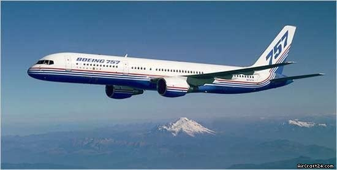